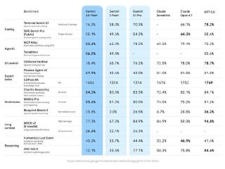
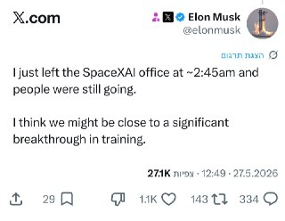
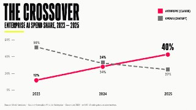

WIREDנמוכה30.05.2026, 00:00
Google’s new AI agent combed through my emails, documents, and calendar to plan a birthday party and still didn’t clock the person most important to me.
אימות 1
Google’s new AI agent combed through my emails, documents, and calendar to plan a birthday party and still didn’t clock the person most important to me.
Pope Leo XIV may not be able to disarm AI, but he’s got the attention of the industry.

כאשר על כל משרת סטודנט שנפתחת מתקבלים מאות קורות חיים תוך שעות, הג'וניורים צריכים לעבוד קשה ולחשוב באופן יצירתי. בכירים בתעשייה מסבירים איך צעירים שנכנסים כעת לשוק העבודה יכולים להתבלט

חוששים מתביעה בגלל ChatGPT או ג'מיני? משרד המשפטים מפרסם הנחיות חדשות למשתמשי בינה מלאכותית, כולל בדיקות חובה לפני פרסום והמלצות לשימוש בטוח במאגרים מוגנים.

Soon-to-be-laid-off Meta contractors say they’re being treated differently than Mark Zuckerberg’s full-time employees, who stand to receive more generous severance packages.

מבחני הביצועים, הוא עוקף כמעט בכל פרמטר את GPT-5.5. בנוסף, קיים מצב מהיר שבו המודל יכול לעבוד פי 2.5 מהר יותר ובעלות זולה פי שלושה בהשוואה למודלים הקודמים. העדכון כבר נמצא בתהליכי הפצה. רוצו לבדוק! #Anthropic #בינהמלאכותית @technewsheb

☁️חברת אנת'רופיק משחררת פלאגין חדש ל-Claude Code שמסייע בזיהוי ותיקון חולשות בזמן כתיבת הקוד. לפי אנת'רופיק התוסף פועל באמצעות hooks ובודק את הקוד בזמן היצירה ובשלב הקומיט. מדובר בסריקה ראשונית ומהירה יחסית לפני ביצוע Code Review מלא.

המערכת. הנה מה שכבר דלף לרשת: סירי מחודשת לחלוטין – העוזרת הקולית Siri תהפוך לחכמה הרבה יותר ותוכל לבחור מי יענה על השאילתות שלכם: ChatGPT, Gemini או Claude. אפליקציית Camera ניתנת להתאמה אישית – ממשק המשתמש יהיה מודולרי, כך שתוכלו לעצב אותו בדיוק לפי הצרכים שלכם.
רגע, מה?! 🤯 רובין הוד משיקה שרת MCP ומאפשרת לכל אחד לחבר את הסוכן האהוב עליו ישירות לחשבון מסחר (חשבון Agentic ייעודי ולא החשבון הראשי), ולתת לו לסחור בשבילו עם הרשאות מלאות.

גוגל הודיעה על השקת המודל 3.5 פלאש. מדובר במודל מהיר מאוד, המהיר פי ארבעה מגיפיטי 5.5. מודל זה, המוגדר כקל משקל של החברה, עולה על ביצועי גיפיטי 5.5 וגם על גמיני 3.1 פרו ברוב הפרמטרים, תוצאה המוגדרת כמרשימה.

תשמרו את הפוסט הזה ותזכרו את המונח Scrubbing שעזר לי ליצור את האתר המהמם הזה! כלים שהשתמשתי: גרוק + קלוד דסקטופ (במצב קלוד קוד). אני רוצה לגלות לכם מה הייתי צריך לעשות כדי לבנות את העמוד היפהפה הזה תוך דקות ספורות (ב-1 בלילה!) - ולא תאמינו כמה שזה קל.

ולמי שמעדיף יוטיוב:

הפוסט מציג טענת "חינם", אבל בלי אימות ברור מול המוצר הרשמי, ולכן צריך לראות בזה טענה שדורשת בדיקה.
חברת ElevenLabs השיקה את Dubbing v2 – כלי שמסוגל לדבב בצורה מקצועית סרטונים מ- או אפילו סרטים באורך מלא, כך שלא תצטרכו לחכות יותר לתרגום של סדרות. במקום להסתמך על תמלול פשוט, Dubbing v2 מתבסס על ניתוח מעמיק ומלא של פס הקול המקורי.

נו באמת… זה מודל שפה מה עכשיו השטויות האלה. קצת אחריות 👆בוריס (ראש הצוות של קלוד קוד) מצטט את אולה (מייסד שותף של אנתרופיק) בינה מלאכותית בטלגרם - t.me/AI_tg_il

יוטיוב השיק חיפוש חדש שמאפשר לשאול שאלות ממש כמו בן אדם הפלטפורמה הוסיפה מצב חיפוש חדש שנקרא Ask . במקום להשתמש במילות מפתח, ניתן לכתוב משפטים רגילים בשפה טבעית, למשל: "עזור לי לתכנן טיול לאורך חוף קליפורניה" או "איך ללמד ילד לרכוב על אופניים".
ה >> הוובינר ללא עלות, לא צריך ניסיון בקוד, יימשך 45 דקות, ויועבר באנגלית. על המרצה: יונתן ירקוני, מייסד ומנכ״ל Latent AI. בעל ניסיון של 6 שנים בצוות ה-AI של Google, ומאמן AI transformation בצוותים בינלאומיים.

טעינו": המנכ"לים של OpenAI ואנתרופיק חוזרים בהם מהנבואות השחורות ומודים שהגזימו באזהרות שה-AI ישתלט על שוק העבודה וימחוק את משרות הצווארון הלבן

מאסק אומר שיתכן שהם קרובים לפריצת דרך משמעותית באימון מודלים 🤷 בינה מלאכותית בטלגרם - t.me/AI_tg_il

📹פלטפורמת תתחיל לסמן באופן אוטומטי סרטוני AI. 🔴 בסרטונים ארוכים, התווית תופיע מעל התיאור; 🔴 ב-Shorts — על גבי הסרטון; 🔴 עבור אנימציה ותוכן בינה מלאכותית שאינו נראה מציאותי בעליל, הסימון יישאר רק בתיאור.

הפוסט מנוסח בצורה שיווקית ומנופחת. העובדות שכדאי לקחת ממנו הן: קלוד ערך את הסרטון הזה עם היכולות החדשות של Hyperframes. כבר לא צריך להפריד שכבות עם כלי עריכת וידאו!

תשמרו לכם את הפוסט הזה מ-2 סיבות: הראשונה - כי זה סרטון שמסביר איך השתמשתי ב-AI כדי ליצור את האתר שאתם רואים פה עם האפקט המטריף הזה.

הפוסט מנוסח בצורה שיווקית ומנופחת. העובדות שכדאי לקחת ממנו הן: זה לא נורמלי. שרתי כמה דקות ל- Suno AI שיומר מוזיקה עם AI, הוא למד ושמר את הקול שלי.

חברת OpenAI טוענת שמודל AI שלה הצליח לעשות משהו די חריג: להפריך באופן עצמאי השערה מתמטית פתוחה כמעט בת 80 שנה. מדובר בהשערת ארדש בתחום הגאומטריה הדיסקרטית, שנוסחה ב־1946.

היום היה יום גדול מאוד בפינת ה-AI שלנו בחדשות 12 - כי דיברנו לראשונה על קלוד! כן, כן! אחרי מגוון יוז קייסים שהראינו עם ChatGPT ו-Gemini, הגברנו הילוך ועלינו רמה והסברנו איך קלוד יכול לחסוך כסף בהשוואת מחירים
דיווח ב"וול סטריט ג'ורנל" חושף מערכה אווירית נרחבת של איחוד האמירויות, שביצעה עשרות תקיפות נגד יעדים אסטרטגיים באיראן לפי הפרסום, הגיחות בוצעו בתיאום הדוק עם ישראל וארה"ב, ובתגובה שיגרה טהרן כ-2,800 טילים וכטב"מים לעבר המדינה הדיווח מפרט את חילוקי הדעות

דובר צה"ל חשף תיעוד המוכיח כי רקטות ששיגר ארגון הטרור חיזבאללה במהלך הלילה הן שפגעו ישירות בכנסיית סנט ג'ורג' האורתודוקסית בכפר הנוצרי מרג' עיון הפרסום מגיע בניגוד לניסיונות בלבנון לייחס את הפגיעה לפעילות ישראלית בצבא מבהירים כי כוחות צה"ל כלל אינם פועלים
ברקע פתיחת הדיאלוג הביטחוני בין ישראל ללבנון, שגריר ישראל בארה"ב יחיאל לייטר הבהיר כי מבחינת ירושלים המפתח להסדרה אינו עובר רק בגבול, אלא בפירוק השפעת חיזבאללה והרחקת איראן מלבנון במקביל, הפנטגון דיווח על התקדמות בשיחות בין המשלחות הצבאיות
לילה הן שפגעו ישירות בכנסיית סנט ג'ורג' האורתודוקסית בכפר הנוצרי מרג' עיון הפרסום מגיע בניגוד לניסיונות בלבנון לייחס את הפגיעה לפעילות ישראלית בצבא מבהירים כי כוחות צה"ל כלל אינם פועלים במרחב הכנסייה: "הוכחה נוספת לכך שחיזבאללה ממשיך לסכן את אזרחי לבנון ולפגוע
נשיא ארה"ב פרסם הודעה מפורטת על המגעים מול טהרן וטען כי הושגו הבנות בנוגע לתוכנית הגרעין ולפתיחת מצר הורמוז "איראן חייבת להסכים לכך שלעולם לא יהיה לה נשק גרעיני" "לא יועבר כסף עד להודעה חדשה

Treasury Secretary Scott Bessent said the U.S. has "outright grabbed" roughly $1 billion worth of cryptocurrencies from Iran via seizures.

New York City, USA, 27th May 2026, Chainwire
Coinbase can offer U.S. customers access to offshore crypto perpetual futures, a risky form of leveraged crypto trading, the CFTC said Friday.

Two papers published this week have reignited debates about the risk posed by “Q-day” to the cryptography that underpins digital assets.

Celsius founder and former CEO Alex Mashinsky hopes to have his prison sentence vacated, claiming a legal conflict tied to Sam Bankman-Fried.

עדכון קצר סביב בלם הפועל פ"ת בעונה שחלפה הפך לרכש הראשון של האלופה בפגרה וילבש אדום עד קיץ 2029: "שמח,נרגש ומודע לציפיות הגבוהות".
במשחק הקרוב: הפועל